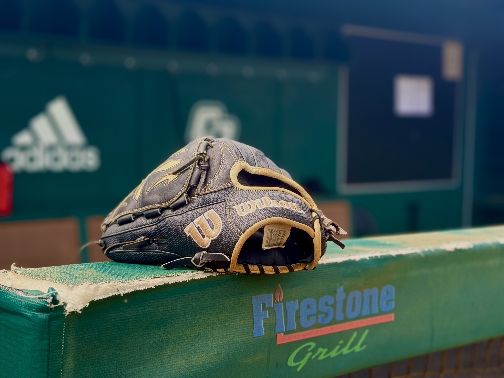
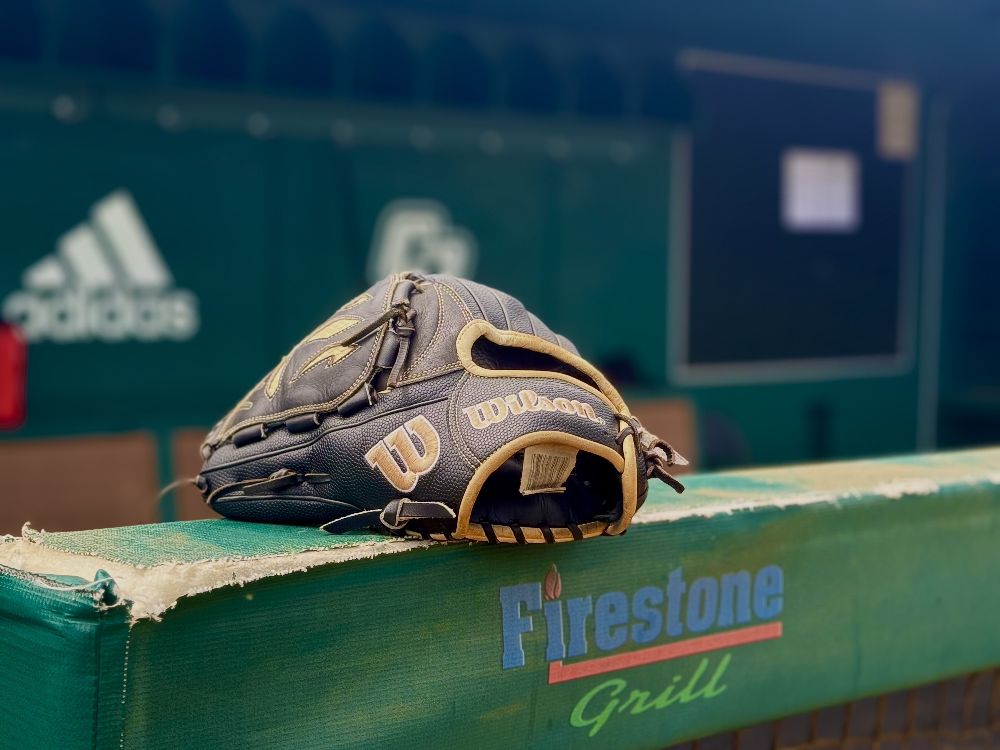

Bases Covered is your number source for everything Cal Poly baseball. Whether it's highlights of the Mustangs season to how the field is prepared, we got you covered!
Bases Covered is your number source for everything Cal Poly baseball. Whether it's highlights of the Mustangs season to how the field is prepared, we got you covered!
After suffering two straight losses to the University of Hawaii in crushing fashion, the Mustangs held an intense practice on April 23 as they prepared for another Big West conference opponent in UC Davis. From flyball drills to hitting drills, coach Lee’s Mustangs seemed eager for their upcoming matchup.
![With veteran head coach Larry Lee watching over, the Mustangs worked on infield catching drills in their second phase of practice. During the drill, Lee paused the group several times-advising players such as senior infielder Joe Yorke and sophomore infielder Evan Cloyd (standing near the clubhouse wall) to “react as soon as possible” and emphasizing the importance of gloves being open and protected when scooping up the ball from the ground. Despite recent success, the Mustangs struggled early in the 2024 season catching the ball infield. The team allowed eight ‘doubles’ to central coast rival UC Santa Barbara and two triples to Ohio State University.](img/3.jpg)

![In the third part of practice, Coach Lee gathered his players near home plate to participate in a hitting drill. For this drill, assistant coach Logan Denholm loaded up the pitching machine with baseballs, and batters in the batting cage had to try and hit every ball that came their way. Leading the way was junior catcher Mack Higuchi. Higuchi hit three out of five balls, with two caught at centerfield. Higuchi has struggled in this area with nine at-bats, four hits, two runs, and has zero home runs.](img/6.jpg)
 

Cal Poly baseball fans share their go to foods and drinks during a baseball game. Click on images to hear!
(Double-click to pause audio)
Learn how Turf Specialist Justin Garcia and the rest of the Cal Poly grounds crew prepare Baggett Stadium for game day! From fixing bases and rechalking lines to raking out dirt, see how the crew prepares the field with a tight deadline!
Past To Present: A look at the evolution of Mustangs baseball